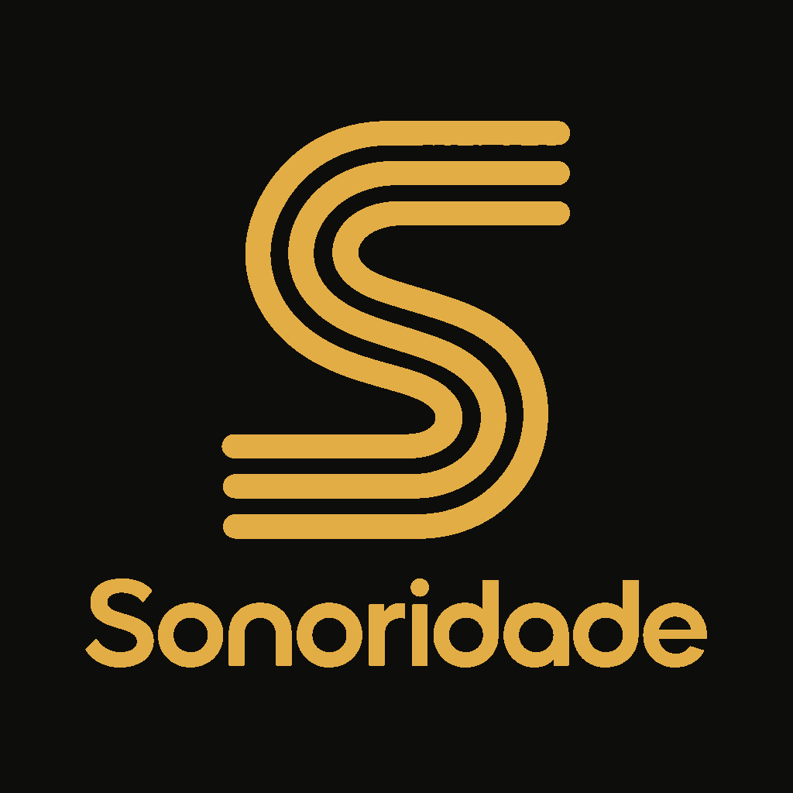
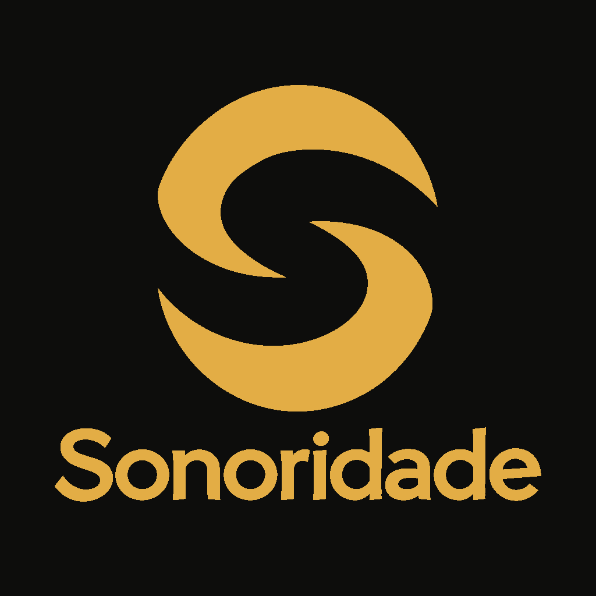
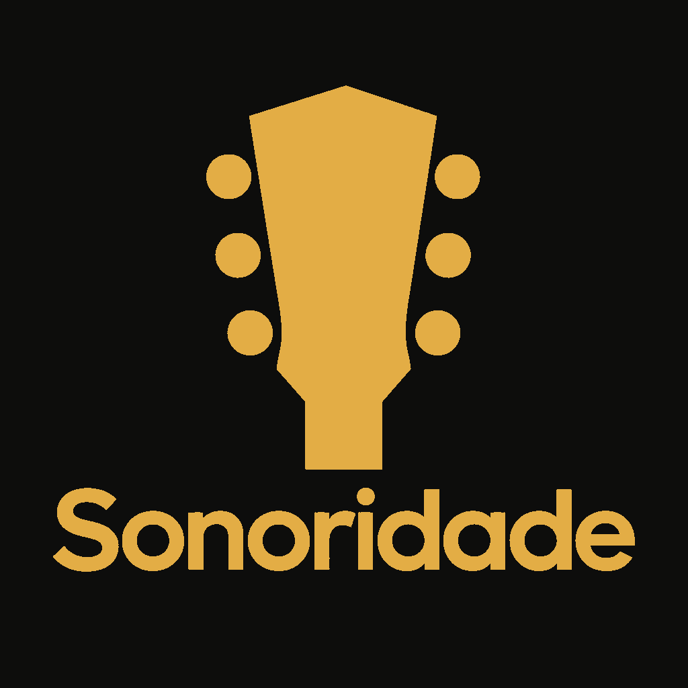
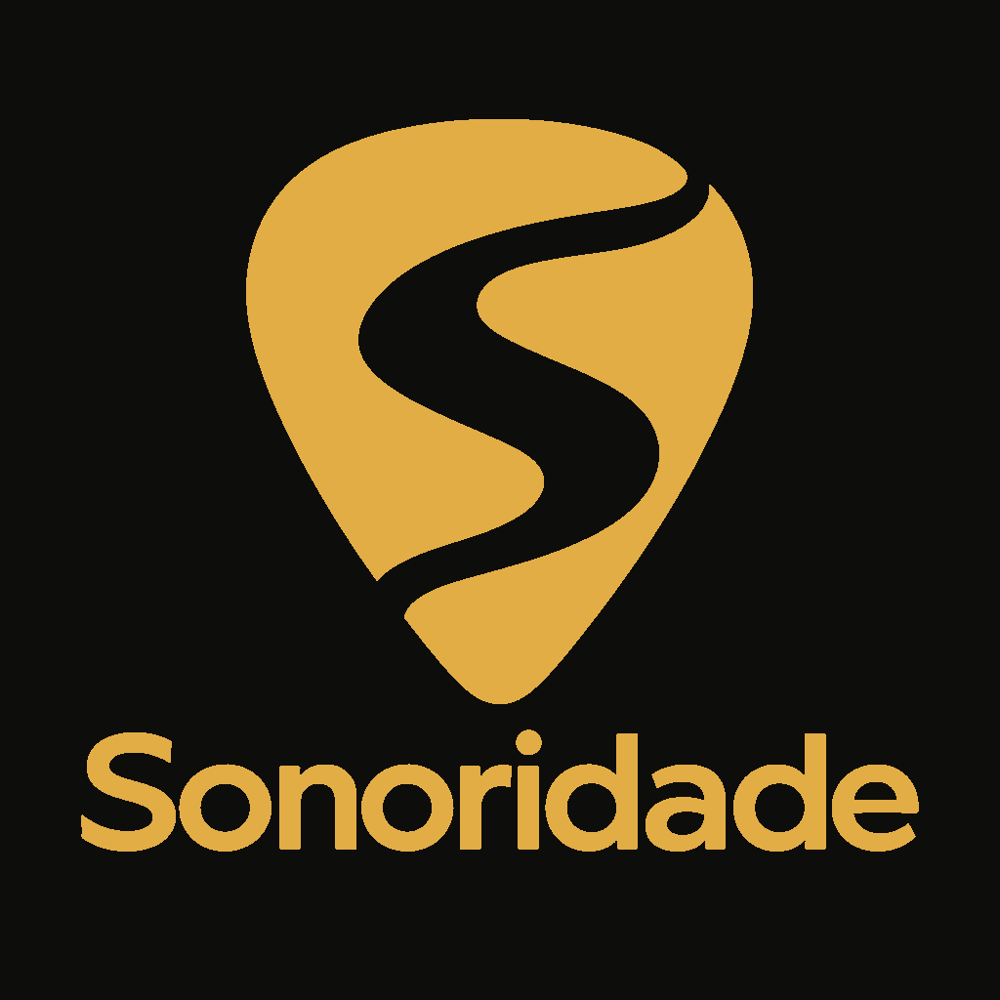
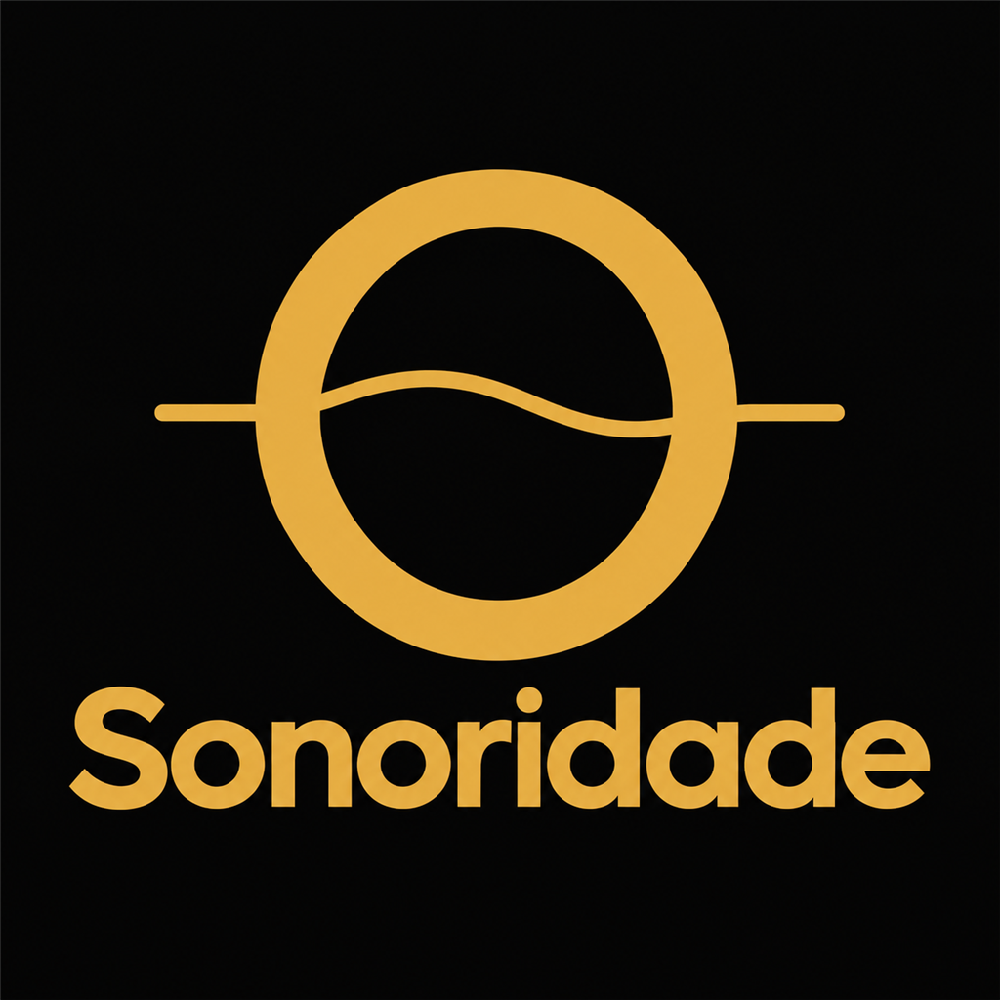
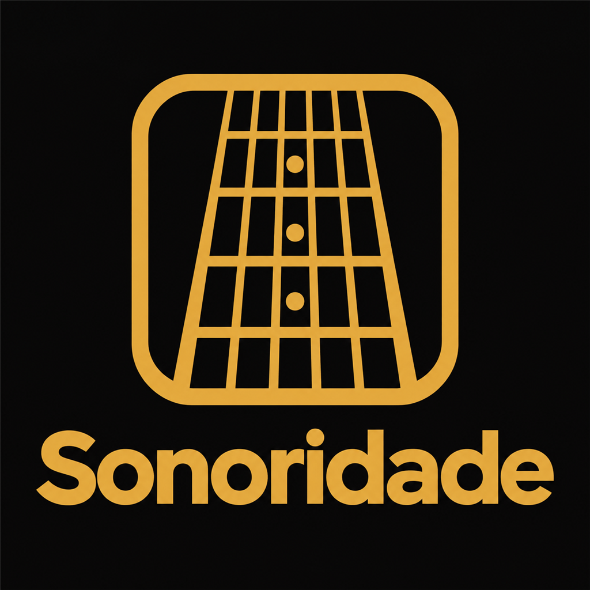
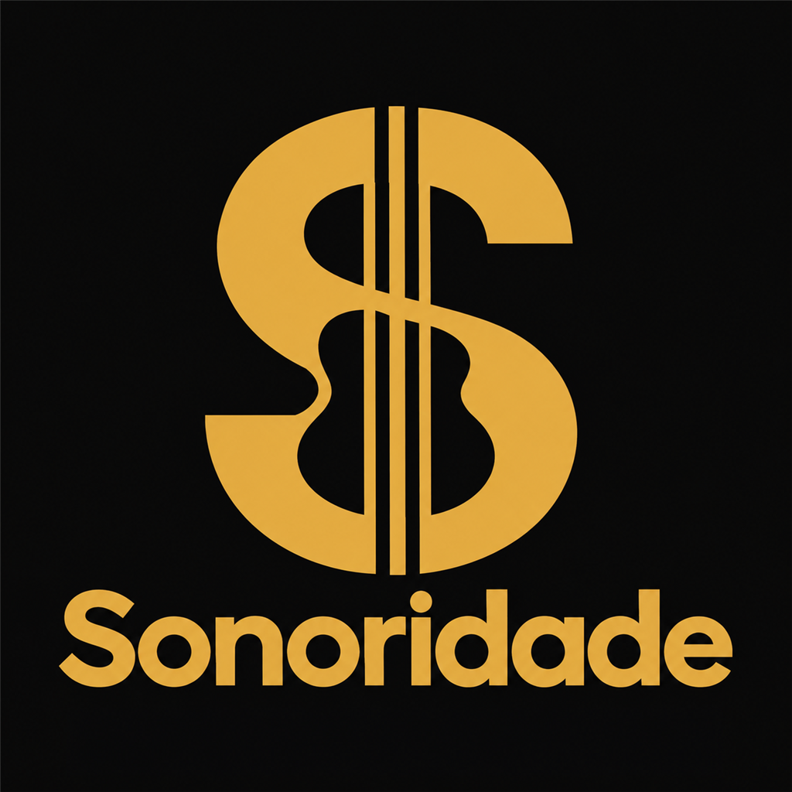
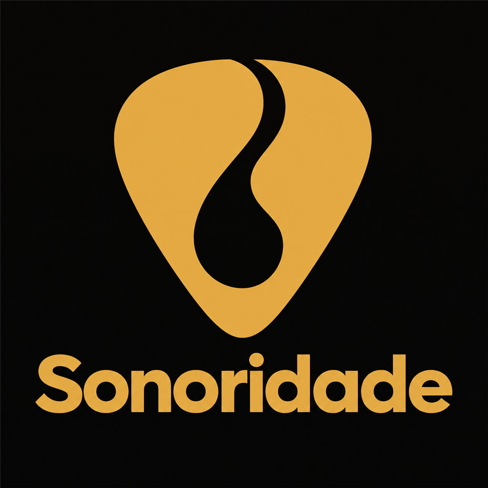
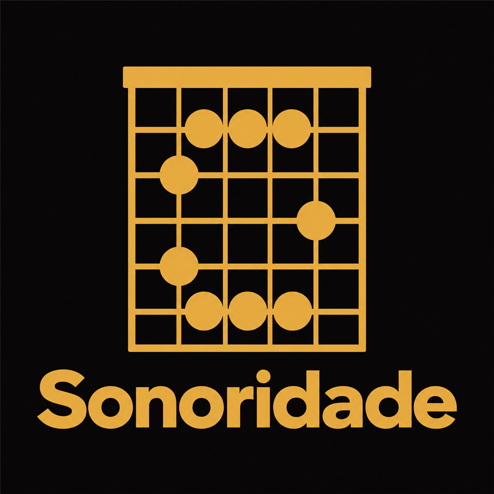

Escolha da logo
10 opções geradas no Codex. Diga o número (ou dois para misturar).

1 · S de cordasTrês cordas formando o S. Forte como ícone.

2 · S na boca do violãoO círculo cortado pelo S. Simples e marcante.

3 · Cabeça do violãoTarraxas como pontos. Óbvio de cara que é instrumento.

4 · Palheta com SPalheta com o S vazado.
5 · Só o nomeFicou sem personalidade.

6 · O com corda vibrandoA boca do violão e uma corda em onda.

7 · Braço em perspectivaTrastes vistos de frente, num quadrado.

8 · Selo com SParece cifrão ($). Descartaria.

9 · Palheta com gotaPalheta com uma onda de som vazada.

10 · Desenho de acordeAs bolinhas do acorde desenham o S.